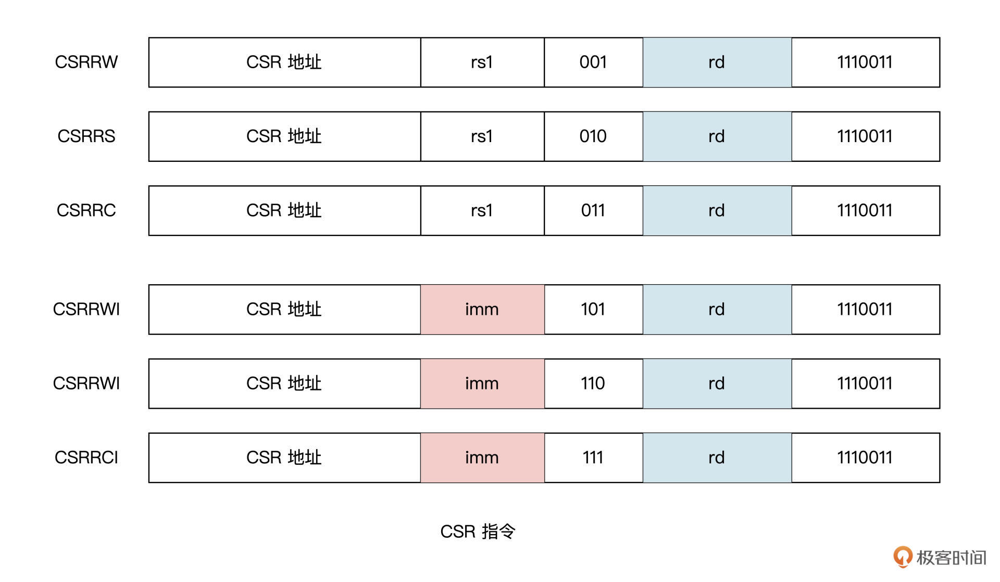

- 00 开篇词 练好基本功，优秀工程师成长第一步.md
- 01 CISC & RISC：从何而来，何至于此.md
- 02 RISC特性与发展：RISC-V凭什么成为“半导体行业的Linux”？.md
- 03 硬件语言筑基（一）：从硬件语言开启手写CPU之旅.md
- 04 硬件语言筑基（二）_ 代码是怎么生成具体电路的？.md
- 05 指令架构：RISC-V在CPU设计上到底有哪些优势？.md
- 06 手写CPU（一）：迷你CPU架构设计与取指令实现.md
- 07 手写CPU（二）：如何实现指令译码模块？.md
- 08 手写CPU（三）：如何实现指令执行模块？.md
- 09 手写CPU（四）：如何实现CPU流水线的访存阶段？.md
- 10 手写CPU（五）：CPU流水线的写回模块如何实现？.md
- 11 手写CPU（六）：如何让我们的CPU跑起来？.md
- 12 QEMU：支持RISC-V的QEMU如何构建？.md
- 13 小试牛刀：跑通RISC-V平台的Hello World程序.md
- 14 走进C语言：高级语言怎样抽象执行逻辑？.md
- 15 C与汇编：揭秘C语言编译器的“搬砖”日常.md
- 16 RISC-V指令精讲（一）：算术指令实现与调试.md
- 17 RISC-V指令精讲（二）：算术指令实现与调试.md
- 18 RISC-V指令精讲（三）：跳转指令实现与调试.md
- 19 RISC-V指令精讲（四）：跳转指令实现与调试.md
- 20 RISC-V指令精讲（五）：原子指令实现与调试.md
- 21 RISC-V指令精讲（六）：加载指令实现与调试.md
- 22 RISC-V指令精讲（七）：访存指令实现与调试.md
- 23 内存地址空间：程序中地址的三种产生方式.md
- 24 虚实结合：虚拟内存和物理内存.md
- 25 堆&栈：堆与栈的区别和应用.md
- 26 延迟分配：提高内存利用率的三种机制.md
- 27 应用内存管理：Linux的应用与内存管理.md
- 28 进程调度：应用为什么能并行执行？.md
- 29 应用间通信（一）：详解Linux进程IPC.md
- 30 应用间通信（二）：详解Linux进程IPC.md
- 31 外设通信：IO Cache与IO调度.md
- 32 IO管理：Linux如何管理多个外设？.md
- 33 lotop与lostat命令：聊聊命令背后的故事与工作原理.md
- 34 文件仓库：初识文件与文件系统.md
- 35 Linux文件系统（一）：Linux如何存放文件？.md
- 36 Linux文件系统（二）：Linux如何存放文件？.md
- 37 浏览器原理（一）：浏览器为什么要用多进程模型？.md
- 38 浏览器原理（二）：浏览器进程通信与网络渲染详解.md
- 39 源码解读：V8 执行 JS 代码的全过程.md
- 40 内功心法（一）：内核和后端通用的设计思想有哪些？.md
- 41 内功心法（二）：内核和后端通用的设计思想有哪些？.md
- 42 性能调优：性能调优工具eBPF和调优方法.md
- 先睹为快：迷你CPU项目效果演示.md
- 加餐01 云计算基础：自己动手搭建一款IAAS虚拟化平台.md
- 加餐02 学习攻略（一）：大数据&云计算，究竟怎么学？.md
- 加餐03 学习攻略（二）：大数据&云计算，究竟怎么学？.md
- 加餐04 谈谈容器云与和CaaS平台.md
- 加餐05 分布式微服务与智能SaaS.md
- 国庆策划01 知识挑战赛：检验一下学习成果吧！.md
- 国庆策划02 来自课代表的学习锦囊.md
- 国庆策划03 揭秘代码优化操作和栈保护机制.md
- 温故知新 思考题参考答案（一）.md
- 用户故事 我是怎样学习Verilog的？.md
- 结束语 心若有所向往，何惧道阻且长.md
05 指令架构：RISC-V在CPU设计上到底有哪些优势？
你好，我是LMOS。
上节课，我们学习了设计一个CPU所需要的相关基础知识，并带你认识了一些后面将会用到的EDA软件工具。看完课程的讲解，还有上手运行的Demo，你是否对接下来要设计CPU已经蠢蠢欲动了？
哈哈，先别着急，我们在设计CPU之前，还有一些很关键的知识需要补充学习。没错，就是CPU的指令集架构。
指令集可以说是一个CPU的基石，要实现CPU的计算和控制功能，就必须要定义好一系列与硬件电路相匹配的指令系统。所以，在设计CPU之初，工程师就应该清楚CPU应该具有怎样的指令架构。
什么是指令集？
在第一节课我们讲历史的时候，曾经提到过，CPU既是程序指令的执行者，又被程序中相关的指令所驱动。不过，我并没有具体说明什么是指令。其实指令就是我们交代CPU要执行的操作。
那到底什么是指令集呢？
我给你打个比方：假如你有一条狗，经过一段时间的训练，它能“听懂”了你对它说一些话。当你对它说“坐下”，它就乖乖地坐在地上；当你对它说“汪汪叫”；它就汪汪汪地叫起来，当你对它说“躺下”，它马上就会躺下来……这里你说的“坐下”、“汪汪叫”、“躺下”这些命令，就相当于计算机世界里的指令。
当然，你还可以继续训练狗，让它识别更多指令，我们把所有的这些指令汇总在一起，就是一个指令集。如果指令集里面没有“上厕所”这个命令，那么即使你对狗下这个命令，它也不会去执行。CPU也一样，必须要有特定的指令集才能工作。
不同的CPU有不同的指令集，根据它们的繁简程度可以分为两种：复杂指令集CISC和精简指令集RISC。
指令集架构（英文叫 Instruction Set Architecture，缩写为ISA）是软件和硬件的接口，不同的应用需求，会有不同的指令架构。我们要想设计一款CPU，指令集体系就是设计的出发点。
RISC-V指令集架构
在开始设计一款处理器之前，我们需要选定它的指令集架构。学过前面的课程，我们知道RISC-V指令集具有明显的优势：一是RISC-V完全开放，二是RISC-V指令简单，三是RISC-V实行模块化设计，易于扩展。
我给你列了一个表，用于给你展示一下RISC-V基础指令集和扩展指令集，如下所示：

要满足现代操作系统和应用程序的基本运行，RV32G指令集或者RV64G指令集就够了（G是通用的意思 ，而I只是整数指令集，G包含I），注意RV32G指令集或者RV64G指令集，只有寄存器位宽和寻址空间大小不同，这些指令按照功能可以分为如下几类。
- 整数运算指令：实现算术、逻辑、比较等运算操作。-
- 分支转移指令：实现条件转移、无条件转移等操作。-
- 加载存储指令：实现字节、半字、字、双字（RV64I）的加载、存储操作，采用的都是寄存器相对寻址方式。-
- 控制与状态寄存器访问指令：实现对系统控制与系统状态寄存器的原子读-写、原子读-修改、原子读-清零等操作。-
- 系统调用指令：实现系统调用功能。-
- 原子指令：用于现在你能看到的各种同步锁。-
- 单双浮点指令：用于实现浮点运算操作。
从上表我们也可以看到，RISC-V指令集具有模块化特点。这就允许我们根据自己的应用需求，选择一个基础指令集，加上若干个扩展指令集灵活搭配，就可以得到我们想要的指令集架构，进而根据这样的指令架构，设计出贴合我们应用需求的CPU。
作为一个初学者，我们先从RISC-V的核心开始。它最核心的部分是一个基础整数指令集，叫做RV32I。RV32I就表示32位的RISC-V。指令集的命名方式我在[第二节课]给你提到过，如果你印象不深了，可以去回顾一下。仅仅依靠RV32I，我们就可以运行一个完整的软件栈。
RV32I包含的指令是固定的，永远不会改变。这为编译器设计人员，操作系统开发人员和汇编语言程序员提供了稳定的基础知识框架。
接下来我们看一张图，这是 RV32I 基础指令集的名称表示。
这些名称，你乍一看是不是有点眼花缭乱？先别慌，我讲一下命名规则，你就能明白了。
从图中我们可以看到，有些字母带有下划线。我们把带有下划线的字母从左到右连接起来，就可以组成一个 RV32I 的指令。对于每一个指令名称，集合标志{}内列举了指令的所有变体，变体用加下划线的字母或下划线字符_表示。如果大括号内只有下划线字符_，则表示对于此指令变体不需用字母表示。
我们再结合例子加深一下理解。下图表示了这四个 RV32I 指令：bge，blt，bgeu，bltu。

通过前面[第三节课]硬件描述语言基础的学习，我们知道了CPU的硬件逻辑里只有“0”和“1”，那么问题来了，怎么用“0”和“1”来表示出上述的指令呢？
要想回答这个问题，我们需要依次去了解指令格式，指令中要用到的寄存器以及指令集中各种功能的指令。
指令格式
我们先从RV32I的指令格式说起。从下图可以看到，RISCV总共也就只有6种指令格式。-

六种指令各司其职，我把它们的作用整理成了表格，这样你看起来一目了然。
不要小看这些指令，我们来分析一下它们到底有哪些优势。这些指令格式规整有序，结构简单。因为指令只有六种格式，并且所有的指令都是 32 位长度的，所以这些指令解码起来就比较简单，可以简化解码电路，提高CPU的性能功耗比。
上图中的opcode代表指令操作码，imm代表立即数，funct3和funct7代表指令对应的功能，rs1、rs2和rd则分别代表源寄存器1、源寄存器2以及目标寄存器。RISC-V的一个指令中可以提供三个寄存器操作数，而不是像 x86一样，让源操作数和目的操作数共享一个字段，因此相比x86指令，RISC-V 减少了软件的程序操作。
而且，源寄存器（rs1和rs2）和目标寄存器（rd），都设计固定在所有RISC-V指令同样的位置上，指令译码相对简单。所以，指令在CPU流水线中执行时，可以先开始访问寄存器，然后再完成指令解码。
此外，这些指令格式的所有立即数的符号位总是在指令的最高位。这个设计有什么好处呢？它意味着，有可能成为关键路径的立即数符号扩展，可以在指令解码前进行。这样可以加速符号扩展电路，有利于CPU流水线的时序优化。
RV32I 寄存器
之前讲指令格式时，我们说到了源寄存器rs1、rs2和目标寄存器rd，那你知道指令中的寄存器都有哪些吗？
在RISC-V的规范里定义了32个通用寄存器。其中，有 31 个是常规寄存器，1 个恒为 0 值的 x0 寄存器。0值寄存器的设置，是为了满足汇编语言程序员和编译器编写者的使用需要，他们可以使用x0寄存器作为操作数，来完成功能相同的操作。
比如说，我们如果需要插入一个空操作，就可以使用汇编语句 “addi x0 , x0, 0 ”（相当于0+0=0）来代替其他指令集中的nop空指令。
由于访问寄存器中的数据要比访问存储器的速度快得多，一般每条 RISC-V 指令最多用一个时钟周期执行（忽略缓存未命中的情况），而ARM-32 或者x86-32 则需要多个时钟周期执行的指令。因为ARM-32只有16个寄存器，而X86-32仅仅只有8个寄存器。
因此，寄存器越多，编译器和汇编程序员的工作就会越轻松。
之前[第二节课]，我给你列过RV32I的32个通用寄存器，这里我再带你复习一下，温故知新。表中的ABI全称为Application Binary Interface，即应用程序二进制接口，也就是寄存器的别名，在汇编程序设计时会用到。
寄存器的内容我们就先讲这些，后面实现CPU的时候具体用到了，我再详细解释。
RV32I的各类指令解读
接下来我们研究一下RV32I的各种指令。如果你写过汇编程序应该知道，一般用得较多的就是算术和逻辑处理语句了，我们先从这类指令说起。
算术与逻辑指令
在RV32I的指令中，包括算术指令（add, sub）、数值比较指令（slt）、逻辑指令（and, or, xor）以及移位指令 （sll, srl, sra）这几种指令。
这些指令和其他指令集差不多，它们从寄存器读取两个 32 位的值，并将 32 位的运算结果再写回到目标寄存器。RV32I 还提供了这些指令的立即数版本，就是如下图所示的I型指令：

同样的，RV32I也提供了寄存器和寄存器操作的指令，包括加减运算、数值比较、逻辑操作和移位操作。这些指令的功能和前面的立即数指令相似，不同的是，这里把指令中的立即数对应位置替换成了源寄存器 rs2。
寄存器和寄存器操作的指令如下表所示：

需要指出的是，在寄存器和寄存器操作的算术指令中，必须要有减法指令，这和立即数操作指令有所不同。
RV32I 的Load和Store
与CISC指令集具有众多的寻址方式不同，RV32I 省略了像 x86-32 指令集那样的复杂寻址模式。在 RISC-V 指令集中，对内存的读写只能通过 LOAD 指令和 STORE 指令实现。而其他的指令，都只能以寄存器为操作对象。
你可以看看后面的这张图，里面列出了Load 指令和Store指令格式：

如上图所示，加载和存储的寻址模式只能是符号扩展12位的立即数，加上基地址寄存器得到访问的存储器地址。因为没有了复杂的内存寻址方式，这让CPU流水线可以对数据冲突提前做出判断，并通过流水线各级之间的转送加以处理，而不需要插入空操作（NOP），极大提高了代码的执行效率。
分支跳转指令
学习了前面的第二节课，相信你对RISC-V指令架构特点已经有所了解，RISC-V遵循的是大道至简的原则。它的指令数目非常简洁，基本指令只有40多条，其中只有6条有条件跳转指令，减少了跳转指令的条数，这样硬件设计上更为简单。
下面，我们分别来看看RV32I条件跳转指令和无条件跳转指令的运行原理。这些原理只要你耐心听我讲完就能理解，而且之后也会应用在我们的在MiniCPU实现中。
有条件分支跳转
RV32I 中的条件跳转指令是通过比较两个寄存器的值，并根据比较结果进行分支跳转。比较可以是：相等（beq），不相等 （bne），大于等于（bge），或小于（blt）。
如下图所示，大于等于（bge），和小于（blt）则跳转指令为有符号数比较，RV32I 也提供了相应的无符号数的比较指令，分别为bgeu和 bltu。剩下的两个比较关系（大于和小于等于），可以通过简单地交换两个操作数位置，来完成相同的比较。例如， x < y 可以表示为y > x ，同样的， x ≤ y也表示为 y ≥ x。-

无条件分支跳转
除了有条件分支跳转，RV32I还提供了无条件跳转指令，无条件跳转指令还可以细分为直接跳转和间接跳转这两种指令。
直接跳转指令JAL如下图所示。RISC-V 为 JAL 指令专门定义了 J-TYPE 格式。
 -
JAL指令的执行过程是这样的。首先，它会把 20 位立即数做符号位扩展，并左移一位，产生一个 32 位的符号数。然后，将该 32 位符号数和 PC 相加来产生目标地址（这样，JAL 可以作为短跳转指令，跳转至 PC±1 MB 的地址范围内）。
-
JAL指令的执行过程是这样的。首先，它会把 20 位立即数做符号位扩展，并左移一位，产生一个 32 位的符号数。然后，将该 32 位符号数和 PC 相加来产生目标地址（这样，JAL 可以作为短跳转指令，跳转至 PC±1 MB 的地址范围内）。
同时，JAL 也会把紧随其后的那条指令的地址，存入目标寄存器中。这样，如果目标寄存器是零，则 JAL 就等同于 GOTO 指令；如果目标寄存器不为零，JAL 可以实现函数调用的功能。

间接跳转指令JALR 如上图所示。JALR 指令会把 12 位立即数和源寄存器相加，并把相加的结果末位清零，作为新的跳转地址。同时，和 JAL 指令一样，JALR 也会把紧随其后的那条指令的地址，存入到目标寄存器中。
RV32I的其他指令
除了内存地址空间和通用寄存器地址空间外，RISC-V 中还定义了一个独立的控制与状态寄存器（Control Status Register，CSR）地址空间。
每个处理器实现的CSR会因设计目标不同而有差异，但这些CSR的访问方式却是一致的，访问这些 CSR 的指令定义在了用户指令集中（Zicsr 指令集扩展）。

有了上图这些CSR指令，能够让我们轻松访问一些程序性能计数器。这些计数器包括系统时间、时间周期以及执行的指令数目。
在 RISC-V 指令集中，还有其他的一些指令，例如用于系统调用的ecall指令，在调试时用于将控制转移到调试环境的ebreak 指令等。对于这些扩展的指令，这里就不展开讲了。
好，到这里，我们就把RISC-V的基础整数指令集——RV32I大体梳理了一遍。你可能感慨，比起训练一条狗，训练“CPU”要复杂得多。不过，通过RV32I这个最核心的指令集，我们也看到了 RISC-V的很多设计优势。
相比CISC，RISCV确实更容易学习和使用。学习了这些基本指令的功能，我们就可以设计出简单的CPU了。
重点回顾
好了，今天的课程就到这里，让我们来回顾一下今天学到的内容。
首先，我们知道了什么是CPU的指令集，并选择 RISC-V最核心的基础整数指令集RV32I 重点学习。RV32I包含的指令是固定的，永远不会改变。我们学好RV32I，不但能为学习RISC-V的扩展指令集打下基础，也能为编译器设计、操作系统开发和汇编程序设计搭建好前置的基础知识框架。
RISC-V到底在CPU设计上有哪些优势？我们从指令格式、寄存器以及指令解读这几个方面入手，做了不少讨论。
RISC-V仅有6种指令格式，它们分别是：R类型指令、 I 型指令、 S 型指令、B 类型指令、 U 型指令和 J 型指令。这些指令格式规整有序，结构简单，所以指令解码起来比较简单，有利于简化解码电路，提高了CPU的性能功耗比。
此外，在RISC-V的规范里，定义了32个通用寄存器。其中有 31 个常规寄存器，一个恒 0 值的 x0 寄存器。由于 RISC-V的寄存器有数量上的优势，使得基于RISC-V设计CPU不用那么频繁地去访问存储器，指令执行起来更快，也让编译器和汇编程序员的工作更加轻松。
之后我们了解到，RV32I的指令包括算术指令、数值比较指令、逻辑指令以及移位指令，这些指令和其他指令集差不多。但是， RISC-V与CISC指令集具有众多的寻址方式不同，RV32I 省略了如 x86-32 指令集的复杂寻址模式。在 RISC-V 指令集中，对内存的读写只能通过 LOAD 指令和 STORE 指令实现。
RISC-V遵循的是大道至简的原则，它的指令数目非常简洁，基本指令只有40多条，而分支跳转指令只有8条，其中6条是带条件跳转指令，2条是无条件跳转指令。这些指令条数的减少，使硬件设计更简单。
除了上面提到的指令，RISC-V还有其他的一些指令，比如，还定义了一个独立的控制与状态寄存器地址空间，其地址宽度是 12 位的。根据每个设计的目标不同，每个处理器实际实现的 CSR 可能会有所不同。对于剩余没有介绍的一些指令，如果你感兴趣的话，可以自己查阅相关资料（比如RISC-V的官方手册）来学习。
最后我为你梳理了这节课的知识导图，供你参考。

思考题
今天我们讲到了RISC-V 中的分支跳转指令 JAL。想想看，为什么要通过调整立即数的某些位，从 U-TYPE指令得到J-TYPE指令格式呢？这样调整以后有什么好处？
期待你记录自己这节课学完的收获或者疑问，我在留言区等你。如果这节课对你有启发，也推荐你分享给更多朋友。下节课我们就要着手设计迷你CPU了，敬请期待。
© 2019 - 2023 Liangliang Lee. Powered by Vert.x and hexo-theme-book.